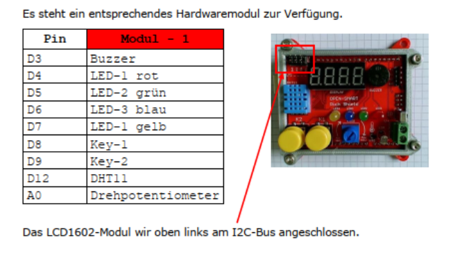
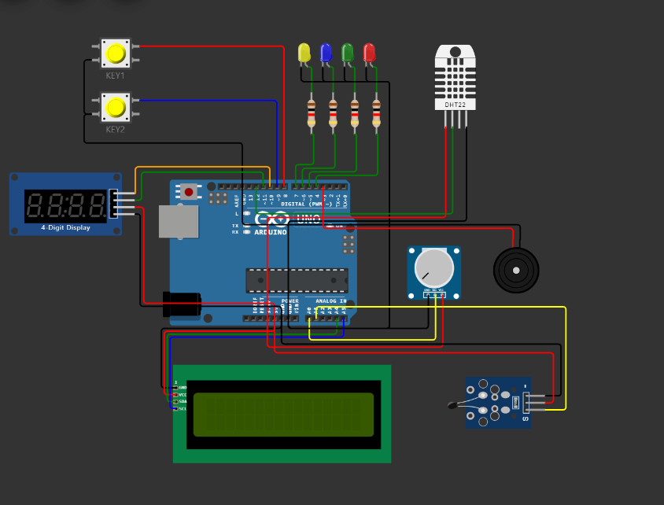

Projekt - Thermostat
Projektbeschreibung:
Die Aufgabe besteht darin eine Klimabox mithilfe von Microcontroller Arduino zu programmieren.
Dabei sollen die Parameter “Temperatur” und “Luftfeuchtigkeit” als Prototyp für ein
Kundengespräch simuliert werden.
Diese elektronischen Komponenten stehen zur Verfügung:
- 1 x Arduino Uno
- 1 x Sensor DHT 11/22
- 4 x LED (gelb, blau, grün, rot)
- 2 x Taster
- 1 x Drehpegler (Potentiometer 10KOhm, KEIN Inkrementalgeber)
- 1 x LCD1602 (zweizeiliges Display, an I2C-Bus angeschlossen)
Der Sensor DHT11/22 kann die Messwerte (Temperatur, Luftfeuchtigkeit) erfassen,
in Variablen speichern und auf einem zweiten Display (LCD1602) anzeigen.

Mit drei LED's soll ein bestimmter Messbereich visualisiert werden.
Als Messwert wird hier die Temperatur gewählt.
- Die blaue LED signalisiert, wenn der Messbereich unterschritteen wird.
Die rote LED signalisiert, wenn ein Messbereich überschritten wird.
Die grüne LED zeigt an, wenn sich der Messwert im vorgegebenen Messbereich befindet.
-
Der min-Wert vom Messbereich ist im Quellcode fest vorzugeben.
Der max-Wert vom Messbereich wird mit dem Drehpotentiometer zur Laufzeit des Programms eingestellt.
Wird der min-Wert von 20°C unterschritten, wird dies mit der blauen LED signalisiert. Wird der max-Wert von 24°C überschritten, wird dies mit der roten LED signalisiert.
Der max-Wert kann in Schritten mit dem Drehpotentiometer nach unten bzw. oben verändern werden, er darf den min-Wert nicht unterschreiten.
-
Da es zu Testzwecken die Umgebungstemperatur der Hardware nicht beliebig verändert werden kann,
erfolgt ein Unit-Test auf der Simulationsplattform Wokwi.
-
Wir müssen darauf achten, dass der Quellcode der Simulation auch auf dem Arduino Uno R1 laufen muss.
Lediglich Der Temperatursensor DHT muss angepasst werden.
Simulation = DHT22 Arduino Shield = DHT11
-
LCD1602-Modul soll die aktuelle Temperatur und Luftfeuchtigkeit anzeigen lassen
-
Optional: Es sollte überprüft werden, ob die aktuellen Werte entweder im seriellen Monitor der IDE
oder in einer Excel- oder CSV-Datei übertragen werden können.
Funktionsbeschreibung:
... kommt noch ...
Modell (Schaltplan):

Quellcode:
... kommt noch ...
Quellcodebeschreibung:
... kommt noch ...